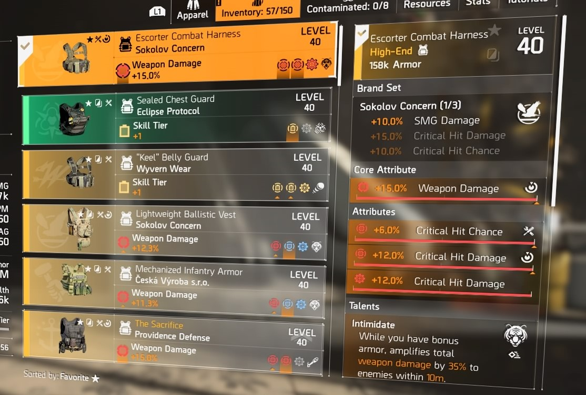

A The Division 2 ezúttal Washingtonban játszódik, és a téli környezetet nyárira cserélik a készítők. Az alapok azonban változatlanok, vagyis most is az ügynökség különleges ügynökeit alakíthatjuk, akik a társadalom széthullását igyekeznek megelőzni. A világméretű járvány után csak nagyon kevesen maradtak életben, azok pedig különböző bandákba verődve fosztogatnak. Velük kell felvenni a harcot a The Division 2-ben. Egyelőre három banda ismert: Truse Sons, Hyenas és Outcasts. Ezek mind más ideológiát követve pusztítanak maguk körül, nekünk pedig meg kell fékeznünk, fel kell számolnunk őket.
A The Division 2 egy akció-szerepjáték, amelyben saját karaktert készíthetünk, majd barátaink oldalán csapatba verődve, kooperatív módban teljesíthetjük a történetet. Ez az ígéretek szerint sokkal összetettebb és változatosabb lesz az első részhez képest, illetve a teljesítése után is dinamikus end game tartalomra lehet számítani.

A Tom Clancy's The Division egy online, nyitott világú, fedezékalapú Third Person Shooter, RPG és MMORPG elemekkel.
A játékos egy virus által puszittot városba kell túlélnie, megküzdeni a frakciókkal. Fontos rész s játékban a loot-olás, azaz különböző tárgyak össze gyújtése ellenfelek megölésével, küldetések teljesítésével vagy elrejtett ládák kinyitásával. Minél nagyobb a szintünk annál jobb felszereléseink lesznek melye különböző tulajdonságokkal bírnak.
Mint például ez a kevláár:
|  |
6% kritikus találat esély 12% kritikus támadó érték Talent: Intimidate |
Rengeteg féla fajta módon lehet végig játaszani a Division-t. Mindenki olyan buildet épít amilet szerene.
A játékos általa preferált hrcmodor fogja meghatározni milyen felszereléseket fog használni.